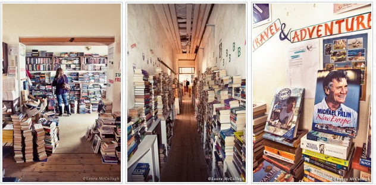
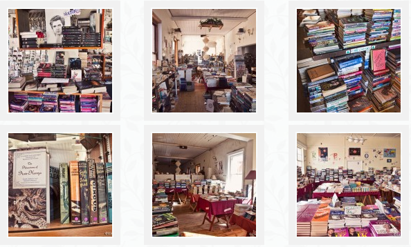

For the first time browser, the bookshop in Beach Road behind the three massive sentinel palms appears to be like many other second-hand bookshops with its tables on the wide veranda bearing boxes and piles of dusted off old books from someone’s attic or garage.
The huge cursive sign, JustRead, Books for you so reminiscent of 1950’s America suggests shelves packed with bodice rippers, Westerns, light reading and magazines, but nothing prepares you for what lies beyond those open doorways.

Stepping over the threshold is like slipping into another world where your senses are soothed by soft, haunting music and a sea of books piled on tables, shelves and the floor. Immediately you begin perusing, and before you know it, you find yourself in a narrow passage where book stacks cling precariously to the walls leading you into a labyrinth of literature, poetry, fact and fiction; the range is impressive.
However, it is not a bookshop for the faint-hearted. Categorised and alphabetised to a degree, it does nonetheless take more of an effort to find exactly the book or author you are looking for, which may frighten off some prospective buyers, but for many, the need to linger and delve is precisely what makes this book shop so compelling.
Discoveries are made while searching through the titles, including occasionally stumbling upon a sleeping cat, unperturbed by your desire to see what book lies beneath his ginger stripes.

And so you wander on and on through rooms that once formed part of Mrs Ballentyne’s residential hotel, ‘The Oleanders’, well-known for over thirty years in Gordon’s Bay. The original public lounge, dining room and kitchen have long since surrendered their space to books about cooking, travel, décor, philosophy and art; books for children and adults in English and Afrikaans, German, French and Italian; history and biography and almost any other subject you can imagine.
From a small room of Afrikaans books in the early nineties, this bookshop has grown impressively in size, quality and reputation and its doors remain open for late evening browsers – a bonus for bibliophiles. This is a treasure-house that should not be bypassed..